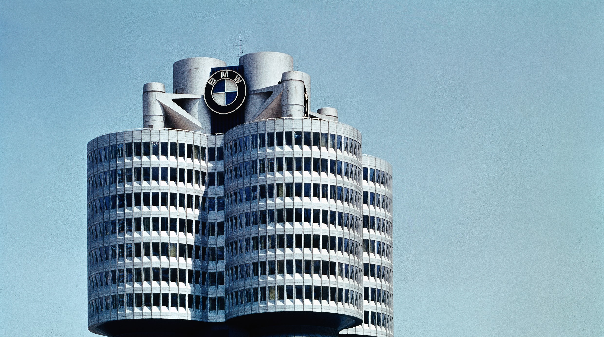
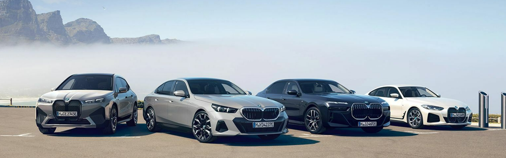
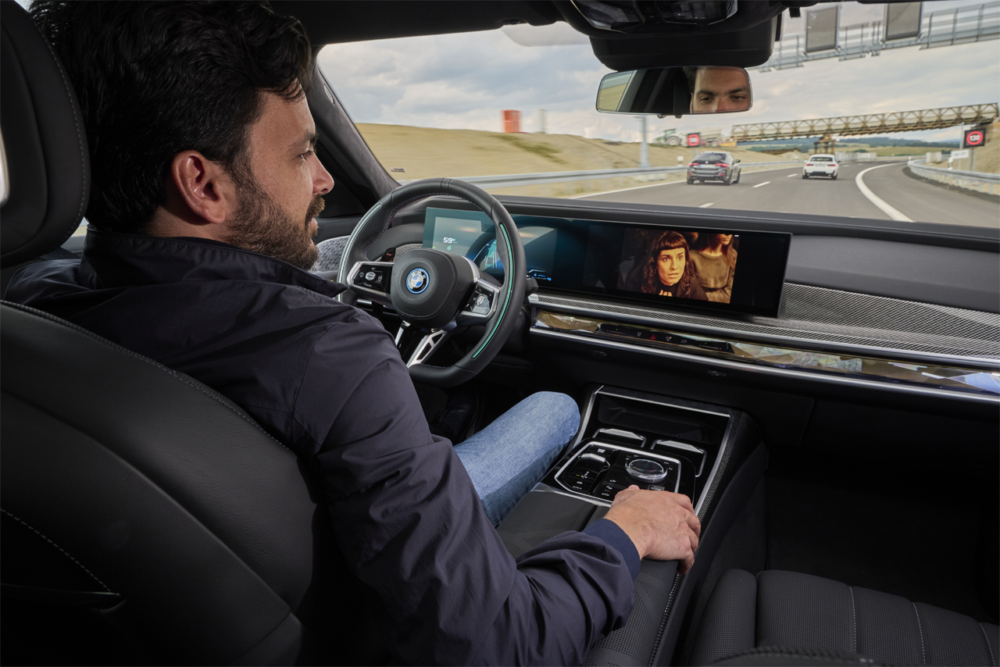
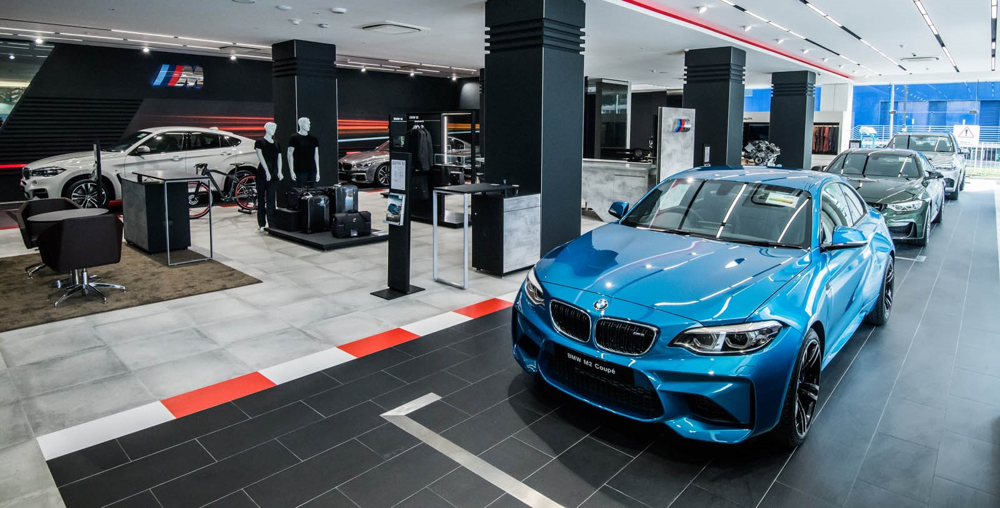

Upoznaj BMW: povijest, serije, motori i održavanje
Ova edukativna stranica objašnjava osnovne informacije o BMW-u na jednostavan, pregledan i objektivan način. Cilj je pomoći korisniku da razumije što BMW kao marka nudi, koje su njegove glavne prednosti, koji su mogući nedostaci te zašto se ova marka razlikuje od nekih drugih proizvođača automobila.

Što je BMW?
BMW je njemački proizvođač automobila koji je poznat po tome što veliku pažnju posvećuje kvaliteti izrade, voznim osobinama i ukupnom dojmu koji automobil ostavlja na vozača. Zbog toga se BMW često promatra kao marka koja ne nudi samo prijevozno sredstvo, nego i određeno iskustvo vožnje.
Usmjerenost na vožnju
BMW vozila često su konstruirana tako da vozaču pruže bolji osjećaj kontrole, stabilnosti i preciznosti tijekom vožnje. To je jedna od glavnih osobina po kojima je marka poznata.
Prepoznatljiv identitet
Marka je prepoznatljiva po sportskijem pristupu, dizajnu i širokoj ponudi modela. Zbog toga BMW privlači korisnike koji traže kombinaciju izgleda, tehnologije i voznih osobina.
Širok raspon modela
BMW proizvodi manje gradske automobile, limuzine, obiteljske modele, SUV vozila i sportske izvedbe. To znači da se unutar iste marke može pronaći automobil za vrlo različite potrebe.

Prednosti BMW-a
Dobar osjećaj u vožnji
Mnogi vozači biraju BMW zato što im je važno kako se automobil ponaša na cesti. Upravljanje je često precizno, a vožnja djeluje sigurnije i stabilnije, posebno pri većim brzinama i na otvorenoj cesti.
Raznolika ponuda modela
Korisnik može birati između više serija i različitih karoserijskih izvedbi, pa se lakše pronalazi automobil za gradsku vožnju, obiteljske potrebe ili duža putovanja.
Kvaliteta izrade
Kod mnogih modela vidljiva je pažnja prema detaljima u unutrašnjosti, izboru materijala i općem dojmu vozila. To doprinosi dojmu ozbiljnosti i kvalitetnijeg proizvoda.
Ugled marke
BMW je jedna od najpoznatijih automobilskih marki u svijetu. Kod mnogih kupaca to stvara osjećaj povjerenja, ali i određenu razinu prestiža.

Mogući nedostaci
Skuplje održavanje
U odnosu na jednostavnije i jeftinije automobile, održavanje BMW-a često može biti skuplje, posebno ako se vozilo ne servisira redovito ili ako se kupi rabljeni primjerak lošeg stanja.
Nije najbolji izbor za svakoga
Ako je nekome najvažnija isključivo niska cijena održavanja i jednostavna uporaba, BMW možda neće biti najbolji izbor. Ova marka više odgovara korisnicima koji su spremni posvetiti pažnju stanju i održavanju vozila.
Potrebna je redovita briga
Vozilo koje se zanemaruje može s vremenom postati financijski zahtjevno. Zato je važno redovito pratiti servisno stanje, mijenjati potrošne dijelove i reagirati na vrijeme.
Različita iskustva po modelima
Nisu svi BMW modeli jednaki. Razlike postoje u veličini, motorima, udobnosti, troškovima i namjeni vozila. Zbog toga je važno promatrati svaki model zasebno.

Za koga BMW može biti dobar izbor?
Kada je BMW dobar izbor
BMW može biti dobar izbor za korisnike kojima su važni kvaliteta izrade, osjećaj u vožnji, stabilnost na cesti i širi izbor modela. Takav automobil odgovara osobama koje traže više od osnovne funkcije prijevoza.
Kada BMW možda nije idealan
Ako korisnik traži isključivo najniže troškove održavanja i najjednostavnije moguće vozilo, druge marke mogu biti prikladniji izbor. Zbog toga je važno razumjeti vlastite potrebe prije kupnje.
